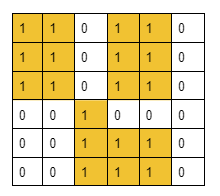
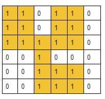
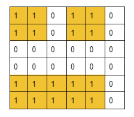
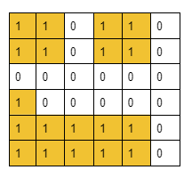
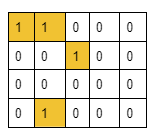
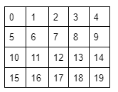
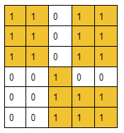

Problem Statement: You are given an n x n binary grid. A grid is said to be binary if every value in the grid is either 1 or 0. You can change at most one cell in the grid from 0 to 1. You need to find the largest group of connected 1's. Two cells are said to be connected if both are adjacent to each other and both have the same value.
Input Format: The following grid is given:
Result: 20
Explanation: We can get the largest group of 20 connected 1s if we change the (2,2) to 1. The groups are shown with colored cells.

Example 2:
Input Format: The following grid is given:
Result: 11
Explanation: We can get the largest group of 11 connected 1s if we change the (3,0) to 1. The groups are shown with colored cells.

Disclaimer: Don't jump directly to the solution, try it out yourself first.
Before moving on to the solution, let’s quickly discuss some points about the question. First, we need to remember that a group means a group of cells with the value 1 such that they share a common side. If we look into it from the matrix view, the statement actually means that two cells with value 1 are considered a single group if one of them is located in any of the four directions (Up, Down, Left, Right) of the other cell. But two diagonal adjacent cells will not be considered a single group rather they will be counted as different groups. The following illustration will depict the concept:

Here cells [0,0] and [0,1] are considered a single group as they share a common side but cells [0,1] and [1,2] must be considered two different groups as they do not have any common side.
Now, we need to discuss the approach with which we are trying to solve this question. Here, we are selecting the cells with value 0 one at a time, then placing the value 1 to that selected cell and finally, we are trying to connect the cells to get the largest possible group of connected 1’s.
Basically, we are checking the largest group of connected 1’s we can get by changing each possible cell with the value 0 one at a time.
So, here is a concept of connecting cells as well as dynamically changing the matrix. We can imagine this matrix as a dynamic graph. So, from these observations, we can easily decide to choose theDisjoint Set data structure to solve this problem.
Let’s discuss the following observations:
Observation 1: How to connect cells to include them in the same group.
Generally, a cell is represented by two parameters i.e. row and column. But to connect the cells as we have done with nodes, we need to first represent each cell with a single number. So, we will number them from 0 to n*m-1(from left to right) where n = no. of total rows and m = total no. of columns.
For example, if a 5X4 matrix is given we will number the cell in the following way:

Now if we want to connect cells (1,0) and (2,0), we will just perform a union of 5 and 10. The number for representing each cell can be found using the following formula: node number = (row of the current cell*total number of columns)+column of the current cell for example, for the cell (2, 0) the number is = (2*5) + 0 = 10.
Observation 2: How to find the cell in which if we invert the value, we will get the largest possible group of connected 1s.
In order to find the cell, we will follow the brute force approach. We will check for every possible cell with a value of 0 one by one and we will try to figure out the largest group we can get after inverting that particular cell to 1 in each case. Among all the answers we will find the cell that creates the largest possible group.
Now, with these two observations, the following is our first approach:
We will first invert a cell from the value 0 to 1 and will check all its four adjacent cells(Up, Down, Left, Right). If any component/group exists, we will just connect the current cell to that adjacent component and add the component’s size to our answer. Finally, checking all four cells, we will add an extra 1 to our answer for the current cell being included in the group, and then we will get the total size of the newly created group.
ButHow to get the size of an existing group/component of connected 1s:
In order to get the size of the existing groups, first, we need to create the existing group by connecting the cells with the value 1. To do so we will do a union of the two node numbers calculated using the above-specified formula if the cells contain 1 and they share a common side. Now after connecting all such cells we will get the different existing components. Now to find the size of the components, we will just find their ultimate parents and refer to the ultimate parent index of the size array inside the Disjoint Set data structure(size[ultimateParent]).
Thus we can calculate the size of the components/groups. But there exists an edge case in this approach.
Edge Case:
Here is the edge case. Let’s understand it using the following example.

In this given grid, we will check for every cell with the value 0. When we come to cell (3,3), we will check all four adjacent cells to get the components’ sizes. Now it will first add the component of size 7 in our answer while checking the left cell and will again add the same component while checking the downward cell. This is where the answer gets incorrect. So, to avoid this edge case,instead of adding the component sizes to our answer we will store the ultimate parents in a set data structure. This process will automatically discard the case of adding duplicate components. After that, to get the size of the ultimate parents we will just refer to the ultimate parent index of the size array inside the Disjoint Set data structure(size[ultimateParent]). Thus we will get the final answer.
Approach:
The algorithm steps are as follows (step 3 is very important):
Our first objective is to connect all the nodes that have formed groups. In order to do so, we will visit each cell of the grid and check if it contains the value 1.
If the value is 1, we will check all four adjacent cells of the current cell. If we find any adjacent cell with the same value 1, we will perform the union(either unionBySize() or unionByRank()) of the two node numbers that represent those two cells i.e. the current cell and the adjacent cell.
Now, step 1 is completed.
Then, we will again visit each cell of the grid and check if it contains the value 0.
If the value is 0, we will check all four adjacent cells of the current cell. If we found any cell with value 1, we will just insert the ultimate parent of that cell(using the findUPar() method) in the set data structure. This process will add the adjacent components to our answer.
After doing so for all the adjacent cells containing 1, we will iterate through the set data structure and add the size of each ultimate parent(referring to the size array inside the Disjoint Set data structure) to our answer. Finally, we will add an extra 1 to our answer for the current cell being included in the group.
Now, we will compare to get the maximum answer among all the previous answers we got for the previous cells with the value 0 and the current one.
But if the matrix does not contain any cell with 0, step 2 will not be executed. For that reason, we will just run a loop from node number 0 to n*n and for each node number, we will find the ultimate parent. After that, we will find the sizes of those ultimate parents and will take the size of the largest one.
Thus we will get the maximum size of the group of connected 1s stored in our answer.
Note: If you wish to see the dry run of the above approach, you can watch the video attached to this article.
Code:
#include <bits/stdc++.h>
using namespace std;
// User function Template for C++
class DisjointSet {
public:
vector<int> rank, parent, size;
DisjointSet(int n) {
rank.resize(n + 1, 0);
parent.resize(n + 1);
size.resize(n + 1);
for (int i = 0; i <= n; i++) {
parent[i] = i;
size[i] = 1;
}
}
int findUPar(int node) {
if (node == parent[node])
return node;
return parent[node] = findUPar(parent[node]);
}
void unionByRank(int u, int v) {
int ulp_u = findUPar(u);
int ulp_v = findUPar(v);
if (ulp_u == ulp_v) return;
if (rank[ulp_u] < rank[ulp_v]) {
parent[ulp_u] = ulp_v;
}
else if (rank[ulp_v] < rank[ulp_u]) {
parent[ulp_v] = ulp_u;
}
else {
parent[ulp_v] = ulp_u;
rank[ulp_u]++;
}
}
void unionBySize(int u, int v) {
int ulp_u = findUPar(u);
int ulp_v = findUPar(v);
if (ulp_u == ulp_v) return;
if (size[ulp_u] < size[ulp_v]) {
parent[ulp_u] = ulp_v;
size[ulp_v] += size[ulp_u];
}
else {
parent[ulp_v] = ulp_u;
size[ulp_u] += size[ulp_v];
}
}
};
class Solution {
private:
bool isValid(int newr, int newc, int n) {
return newr >= 0 && newr < n && newc >= 0 && newc < n;
}
public:
int MaxConnection(vector<vector<int>>& grid) {
int n = grid.size();
DisjointSet ds(n * n);
// step - 1
for (int row = 0; row < n ; row++) {
for (int col = 0; col < n ; col++) {
if (grid[row][col] == 0) continue;
int dr[] = { -1, 0, 1, 0};
int dc[] = {0, -1, 0, 1};
for (int ind = 0; ind < 4; ind++) {
int newr = row + dr[ind];
int newc = col + dc[ind];
if (isValid(newr, newc, n) && grid[newr][newc] == 1) {
int nodeNo = row * n + col;
int adjNodeNo = newr * n + newc;
ds.unionBySize(nodeNo, adjNodeNo);
}
}
}
}
// step 2
int mx = 0;
for (int row = 0; row < n; row++) {
for (int col = 0; col < n; col++) {
if (grid[row][col] == 1) continue;
int dr[] = { -1, 0, 1, 0};
int dc[] = {0, -1, 0, 1};
set<int> components;
for (int ind = 0; ind < 4; ind++) {
int newr = row + dr[ind];
int newc = col + dc[ind];
if (isValid(newr, newc, n)) {
if (grid[newr][newc] == 1) {
components.insert(ds.findUPar(newr * n + newc));
}
}
}
int sizeTotal = 0;
for (auto it : components) {
sizeTotal += ds.size[it];
}
mx = max(mx, sizeTotal + 1);
}
}
for (int cellNo = 0; cellNo < n * n; cellNo++) {
mx = max(mx, ds.size[ds.findUPar(cellNo)]);
}
return mx;
}
};
int main() {
vector<vector<int>> grid = {
{1, 1, 0, 1, 1, 0}, {1, 1, 0, 1, 1, 0},
{1, 1, 0, 1, 1, 0}, {0, 0, 1, 0, 0, 0},
{0, 0, 1, 1, 1, 0}, {0, 0, 1, 1, 1, 0}
};
Solution obj;
int ans = obj.MaxConnection(grid);
cout << "The largest group of connected 1s is of size: " << ans << endl;
return 0;
}
Output: The largest group of connected 1s is of size: 20
Time Complexity: O(N2)+O(N2) ~ O(N2) where N = total number of rows of the grid. Inside those nested loops, all the operations are taking apparently constant time. So, O(N2) for the nested loop only, is the time complexity.
Space Complexity: O(2*N2) where N = the total number of rows of the grid. This is for the two arrays i.e. parent array and size array of size N2 inside the Disjoint set.
import java.io.*;
import java.util.*;
class DisjointSet {
List<Integer> rank = new ArrayList<>();
List<Integer> parent = new ArrayList<>();
List<Integer> size = new ArrayList<>();
public DisjointSet(int n) {
for (int i = 0; i <= n; i++) {
rank.add(0);
parent.add(i);
size.add(1);
}
}
public int findUPar(int node) {
if (node == parent.get(node)) {
return node;
}
int ulp = findUPar(parent.get(node));
parent.set(node, ulp);
return parent.get(node);
}
public void unionByRank(int u, int v) {
int ulp_u = findUPar(u);
int ulp_v = findUPar(v);
if (ulp_u == ulp_v) return;
if (rank.get(ulp_u) < rank.get(ulp_v)) {
parent.set(ulp_u, ulp_v);
} else if (rank.get(ulp_v) < rank.get(ulp_u)) {
parent.set(ulp_v, ulp_u);
} else {
parent.set(ulp_v, ulp_u);
int rankU = rank.get(ulp_u);
rank.set(ulp_u, rankU + 1);
}
}
public void unionBySize(int u, int v) {
int ulp_u = findUPar(u);
int ulp_v = findUPar(v);
if (ulp_u == ulp_v) return;
if (size.get(ulp_u) < size.get(ulp_v)) {
parent.set(ulp_u, ulp_v);
size.set(ulp_v, size.get(ulp_v) + size.get(ulp_u));
} else {
parent.set(ulp_v, ulp_u);
size.set(ulp_u, size.get(ulp_u) + size.get(ulp_v));
}
}
}
class Solution {
private boolean isValid(int newr, int newc, int n) {
return newr >= 0 && newr < n && newc >= 0 && newc < n;
}
public int MaxConnection(int grid[][]) {
int n = grid.length;
DisjointSet ds = new DisjointSet(n * n);
// step - 1
for (int row = 0; row < n ; row++) {
for (int col = 0; col < n ; col++) {
if (grid[row][col] == 0) continue;
int dr[] = { -1, 0, 1, 0};
int dc[] = {0, -1, 0, 1};
for (int ind = 0; ind < 4; ind++) {
int newr = row + dr[ind];
int newc = col + dc[ind];
if (isValid(newr, newc, n) && grid[newr][newc] == 1) {
int nodeNo = row * n + col;
int adjNodeNo = newr * n + newc;
ds.unionBySize(nodeNo, adjNodeNo);
}
}
}
}
// step 2
int mx = 0;
for (int row = 0; row < n; row++) {
for (int col = 0; col < n; col++) {
if (grid[row][col] == 1) continue;
int dr[] = { -1, 0, 1, 0};
int dc[] = {0, -1, 0, 1};
HashSet<Integer> components = new HashSet<>();
for (int ind = 0; ind < 4; ind++) {
int newr = row + dr[ind];
int newc = col + dc[ind];
if (isValid(newr, newc, n)) {
if (grid[newr][newc] == 1) {
components.add(ds.findUPar(newr * n + newc));
}
}
}
int sizeTotal = 0;
for (Integer parents : components) {
sizeTotal += ds.size.get(parents);
}
mx = Math.max(mx, sizeTotal + 1);
}
}
for (int cellNo = 0; cellNo < n * n; cellNo++) {
mx = Math.max(mx, ds.size.get(ds.findUPar(cellNo)));
}
return mx;
}
}
class Main {
public static void main (String[] args) {
int[][] grid = {
{1, 1, 0, 1, 1, 0}, {1, 1, 0, 1, 1, 0},
{1, 1, 0, 1, 1, 0}, {0, 0, 1, 0, 0, 0},
{0, 0, 1, 1, 1, 0}, {0, 0, 1, 1, 1, 0}
};
Solution obj = new Solution();
int ans = obj.MaxConnection(grid);
System.out.println("The largest group of connected 1s is of size: " + ans);
}
}
Output: The largest group of connected 1s is of size: 20
Time Complexity: O(N2)+O(N2) ~ O(N2) where N = total number of rows of the grid. Inside those nested loops, all the operations are taking apparently constant time. So, O(N2) for the nested loop only, is the time complexity.
Space Complexity: O(2*N2) where N = the total number of rows of the grid. This is for the two arrays i.e. parent array and size array of size N2 inside the Disjoint set.